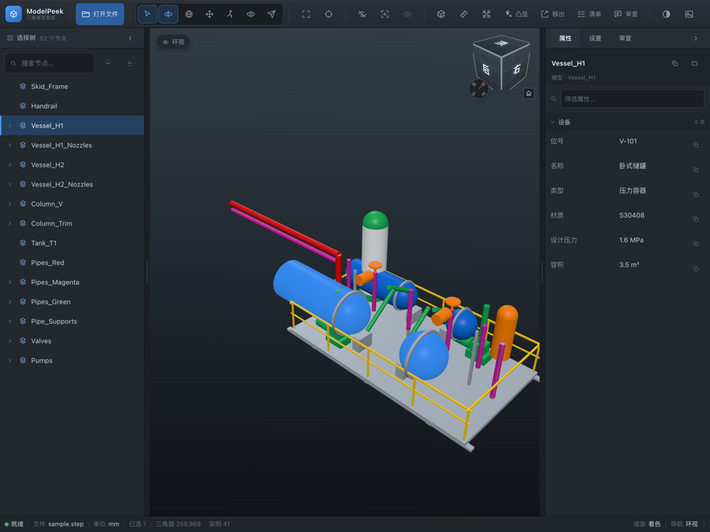
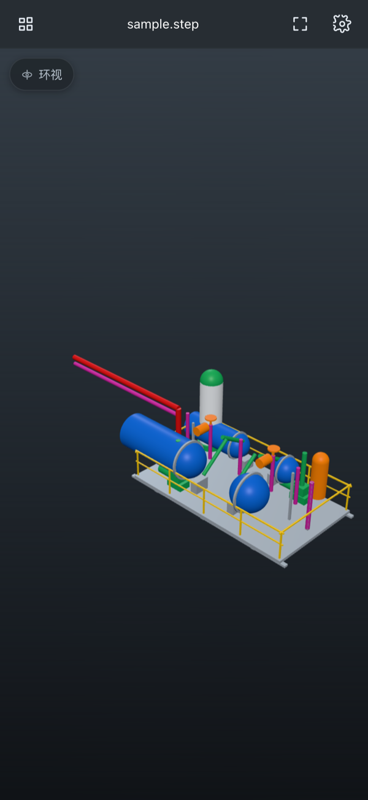
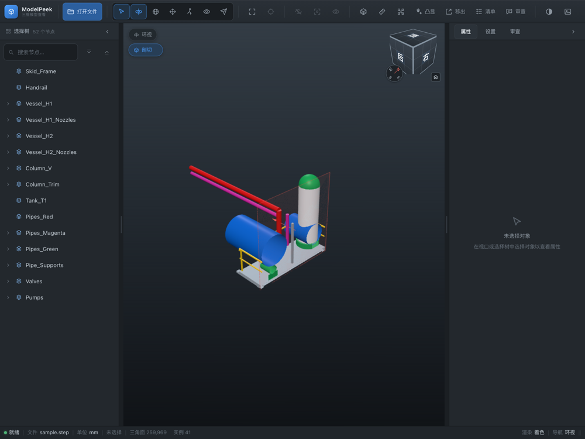

本地转换，不上传
转换和渲染都在设备内完成。没有服务器、没有账号，也不需要网络。
ModelPeek 在设备本地转换并渲染 STEP、IGES、BREP、STL、OBJ、glTF、VRML， 以及 NWD / NWC / NWF。打开文件就能看，不需要网络。

为工程现场和移动审阅设计：模型不上传，格式不挑，iPad 上也能像桌面一样工作。
转换和渲染都在设备内完成。没有服务器、没有账号，也不需要网络。
STEP / IGES / BREP / STL / OBJ / glTF / VRML，以及 NWD / NWC / NWF。
左侧选择树、右侧属性/设置/审查，支持分屏、台前调度和硬件键盘。
不只是转一圈看看：定位零件、看内部结构、做批注，都在同一个查看器里。
按装配层级定位对象，查看属性、隐藏、隔离或只显示选中项。
沿 X / Y / Z 轴剖切，量点到点距离或连续折线长度。
把关键零件从装配里拉出来，分层展开，快速检查内部关系。
选中对象写批注，导出给建模方；批注和视点都留在本地。
跟随现场光线切换主题；界面支持中文和 English，可调字号。
支持文件 App、iCloud Drive、AirDrop 和邮件附件「用 ModelPeek 打开」。
CAD 与 Navisworks 文件都在设备本地转换；不需要安装 CAD 软件。
| 格式 | 扩展名 | 说明 |
|---|---|---|
| STEP | .stp .step .p21 | 带装配层级、零件名和颜色 |
| IGES | .igs .iges | 带名称、图层和颜色 |
| BREP | .brep | OpenCASCADE 边界表示 |
| STL | .stl | 三角网格 |
| OBJ | .obj | Wavefront 网格 |
| glTF 2.0 | .glb .gltf | 带节点层级和材质 |
| VRML | .wrl .vrml | 带节点层级和材质 |
| NWD / NWC / NWF | .nwd .nwc .nwf | Navisworks 文件，进程内解析 |
NWD/NWC/NWF 使用独立解析库读取，同样只在设备本地处理；源文件不会被上传。
iPhone 用触控优先的单栏界面；iPad 用三栏桌面布局，屏幕越大看到的信息越多。


ModelPeek 不收集数据、不包含分析 SDK、不要求登录。模型转换和渲染都在设备本地完成， 不会上传到任何服务器。
在 App Store 搜索 ModelPeek，或直接打开产品页。
App Store 产品页将在审核通过后生效。
ModelPeek is an offline 3D/CAD model viewer for iPhone and iPad. It opens STEP, IGES, BREP, STL, OBJ, glTF, VRML and NWD/NWC/NWF files, converting and rendering entirely on-device — no upload, no account, no network.
Need help? Visit Support. Read our Privacy Policy.